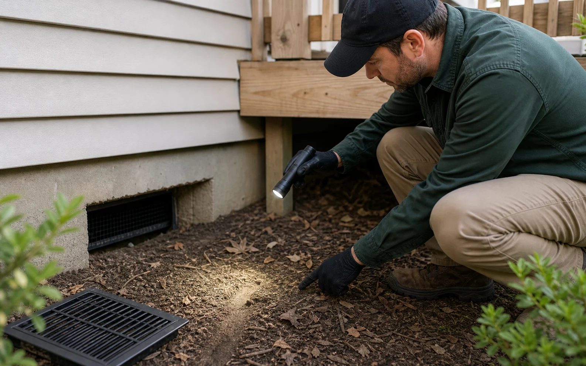
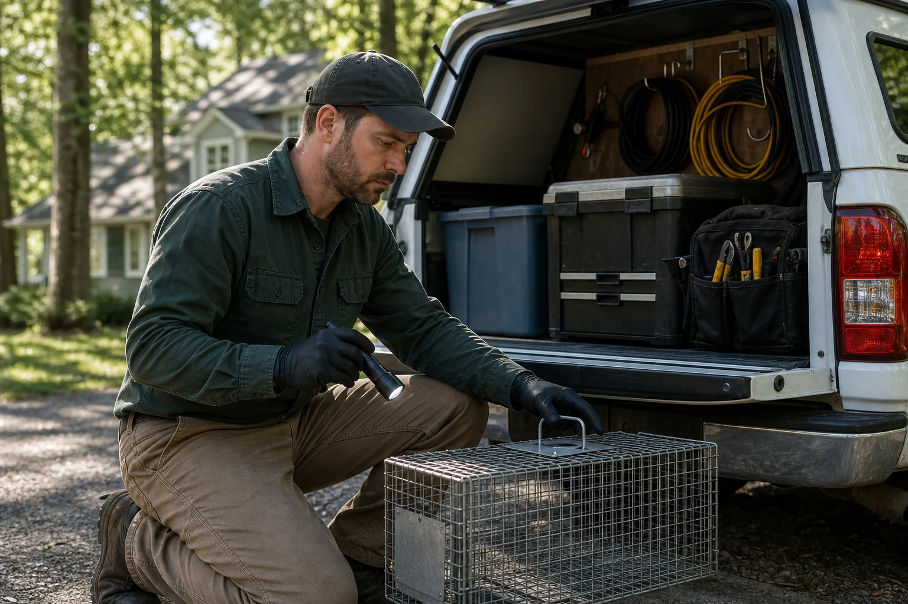
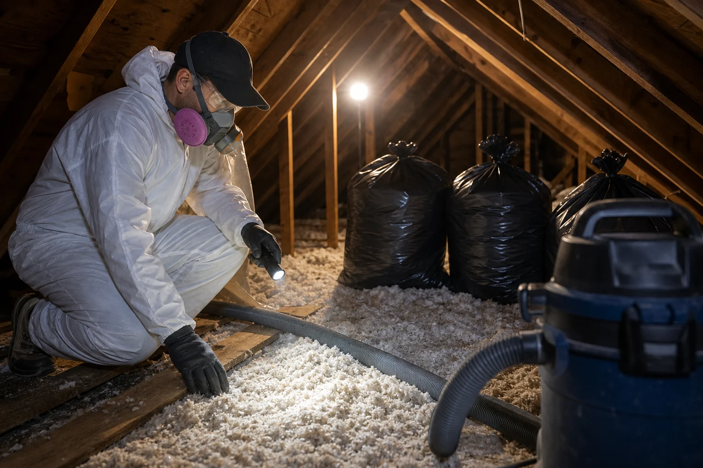

Local matching
Requests are routed for the service area and the type of wildlife activity described.
Full-cycle wildlife removal support for inspection, humane removal, exclusion repairs, cleanup guidance, and prevention.
Wildlife calls are rarely isolated. A raccoon in the attic may mean weak soffits. A snake near the garage may point to rodents. A bat colony may expose tiny roof gaps. We structure the site around the complete chain of work.
Requests are routed for the service area and the type of wildlife activity described.
Exclusion, sealing, and prevention are treated as core work, not afterthoughts.


Wildlife activity usually leaves a pattern before the animal is ever seen. The goal is to connect the sounds, damage, odors, and exterior gaps into one clear plan.
Each service has its own page with a full scope, included work, field process, prevention steps, and supporting images.

Wildlife problems usually start with a weak access point and end only when the structure is protected again. The process is simple: identify what is active, remove it humanely, clean what was affected, and close the route back in.
Trace entry points, travel paths, nesting zones, and conditions that attracted activity.
Use species-aware methods that avoid sealing animals inside or separating dependent young.
Review droppings, odor, insulation disturbance, and sanitation needs before closing spaces.
Reinforce vents, soffits, roof returns, gaps, and crawl-space access with durable materials.
A complete wildlife service should reduce immediate activity and also address the conditions that made the property vulnerable.

Attics, crawl spaces, and wall-adjacent areas may need review for nesting material, droppings, odor, insulation disturbance, or moisture issues.

Durable prevention focuses on the real entry path: vents, roof returns, soffits, chimney gaps, utility penetrations, crawl-space doors, and foundation openings.
A clear process helps customers understand what happens after they submit a wildlife issue.
Describe the animal, location, timing, and any safety concerns.
Connect with a provider for inspection and service recommendations.
Confirm humane removal or exclusion options for the species involved.
Repair the entry points and reinforce vulnerable areas.
Review cleanup, odor, insulation, and long-term prevention needs.
Wildlife removal feels stressful when the next step is unclear. This site is built around the information a homeowner needs before choosing a provider.
Attic, roofline, crawl space, chimney, vents, foundation, or yard conditions are treated as one access pattern.
Animals in living areas, bites, odors, trapped wildlife, or active nesting are separated from routine prevention.
Removal, exclusion, sanitation, attic review, repair recommendations, and follow-up needs are explained before the request moves forward.
Customers are reminded to confirm licensing, insurance, credentials, pricing, warranty terms, and local wildlife rules.